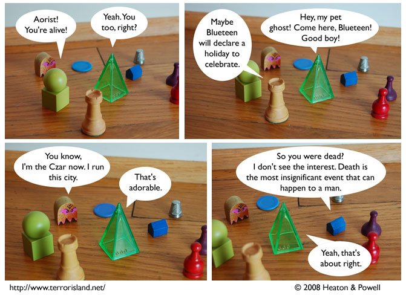

Strip #301
— Wednesday, May 14, 2008
Is this the real Aorist, or an impostor? You be the judge!
Notes, Thoughts, &c.
Ben’s Notes
Lewis is going to be in Palo Alto this weekend, making this one of the rare occasions when we’re in the same city for something other than Comic-Con.
So that means this is a great opportunity for TerIslFaCon 2008: the first and best Terror Island Fan Convention of 2008! Fans will be meeting up at 1 p.m. on Sunday, somewhere on California Avenue. Be there or miss out!
Lewis’s Notes
Just FYI, Ben and I are fairly likely to kill off a character soon, not sure who, but my guess would be that the character we kill is going to be green and pyramidal, though.